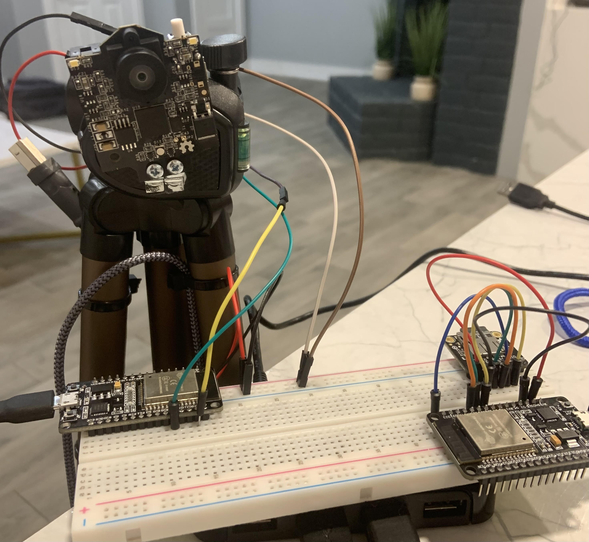

For my senior capstone project, me and 3 classmates participated in the NASA Texas Space Grant Consortium design challenge. Our task was to develop a proof-of-concept system that would track up to 4 individuals inside an area roughly 6 meters in diameter. The purpose of this project is to understand the psychological and behavioral effects of isolation during long space-flights.
The system we designed involves multiple Pixy2.1 cameras, each paired with their own ESP32 microcontroller. These cameras detect unique colored-patches that the crew members would wear. Each ESP32 sends raw data from the cameras to a centralized microcontroller, where the data is processed and the final position and orientation of each crew member is saved onto an SD card.
My final project in my machine learning course involved predicting the RUL in batteries using a dataset from NASA.
I designed a PID controller in MATLAB and TopSPICE with a 21.4% overshoot and a time-to-peak of 57.1 milliseconds for a plant system with poles at 40, 50, and 90 rad/s. The first step was verifying the transfer function of the plant system given its poles. I produced bode plots for the SPICE schematic and MATLAB and compared the magnitudes of both at various frequencies. To eliminate any steady-state error, I added an integral channel with a pole at the origin and a zero at 10% of the nearest pole. My goal with the derivative channel was to decrease the time-to-peak by 30%.